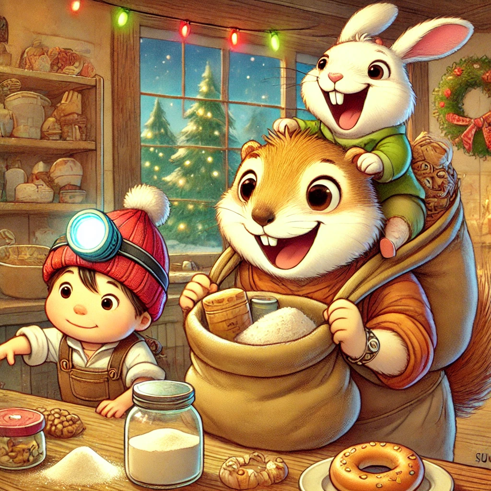
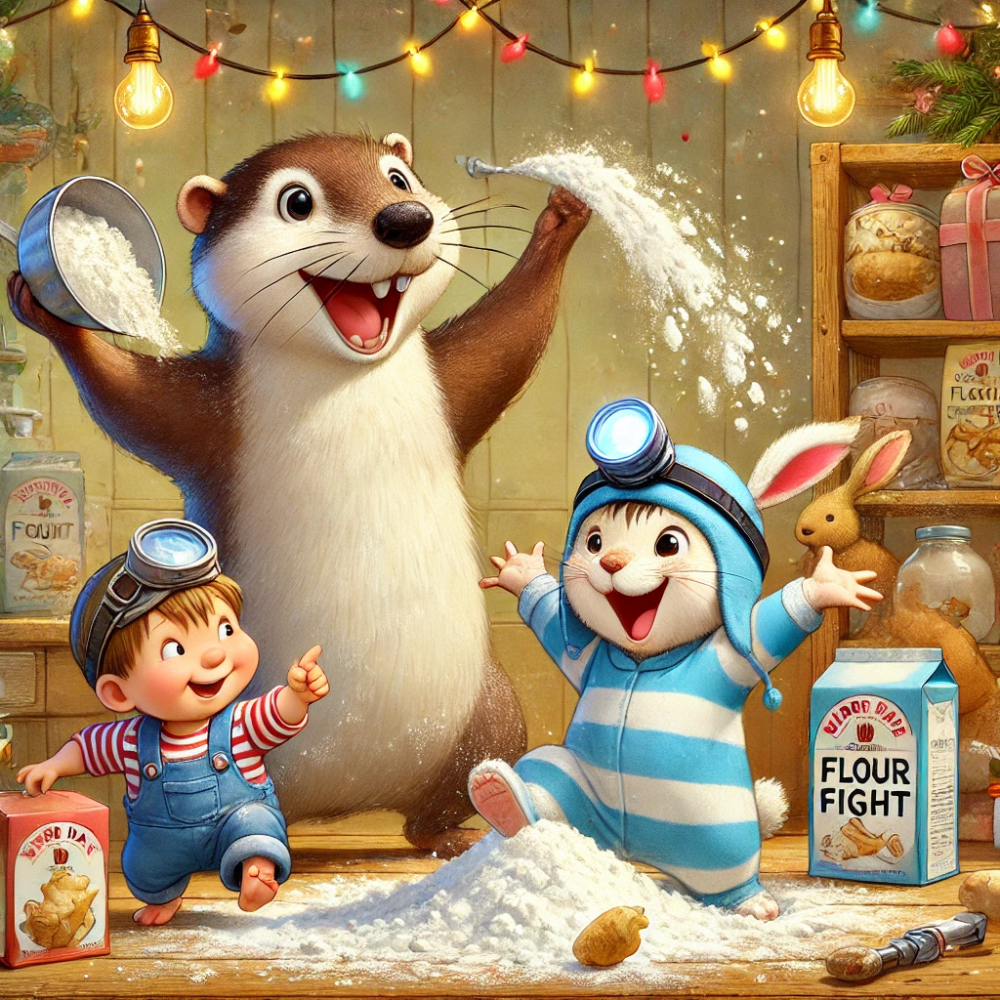
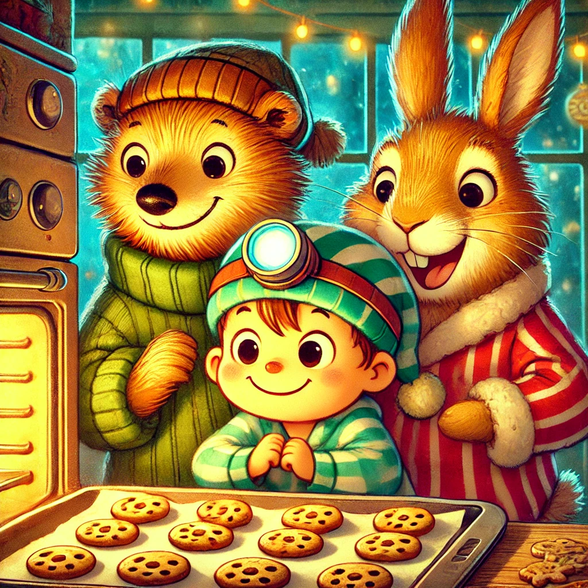

Es war einmal ein Wiesel namens Winnie, das oben auf dem Knabbereienregal eines Supermarkts in Leknes auf den Lofoten wohnte. Adventszeit - Plätzchenzeit. Winnie als absolute Essensliebhaberin war großer Weihnachtsfan.
Und sie hatte Biep und Herrn Hase angesteckt: die drei liefen seit einer Stunde aufgeregt mit einer großen Tasche durch den Supermarkt und stopften Mehl, Zucker, Schokolade, Zimt, Marmelade, Butter und allerlei andere Dinge hinein.
Winnie hatte beim Lesenüben in einem Magazin Rezepte für Weihnachtsplätzchen entdeckt. Die Bilder ließen ihr das Wasser im Mund zusammenlaufen. Vanillekipferl, Zimtsterne und Lebkuchen sah sie da. Und Winnie beschloss, alles davon zu backen. Das Problem war nur, dass Winnie faul war und überhaupt nicht backen könnte. So erzählte sie ihren beiden Freunden davon und siehe da, Herr Hase offenbarte ein verstecktes Talent: kochen und backen waren eine große Stärke von ihm. "Freunde muss man haben!" rief Winnie und so kam es, dass sie ungeplant und wild am Zutaten sammeln waren.
Die drei warteten, bis der Supermarkt geschlossen war und tänzelten mit Schokokringelaugen Richtung Backwarenabteilung, wo sie den Aufbackofen in Beschlag nahmen.
Winnie, frustriert vom Mehl und Zucker abmessen, startete eine Mehlballschlacht und bald saßen die drei keuchend und lachend am Boden. Biep und Herrn Hase rollten die Ärmel hoch: "Winnie, ohne dich geht es sicher schneller. Du erzählst uns Geschichten, während wir backen!".
Das ließ sich Winnie nicht zweimal sagen. Weit holte sie aus, um die Geschichte vom heiligen Wiesel, das in Jerusalem geboren wurde zu erzählen. Eine Stunde später, saßen die drei wie vor einem Fernseher und starrten in den Ofen. Die Plätzchen sahen köstlich aus und der Geruch brachte Winnie fast um den Verstand. Als es endlich so weit war, reichte Herr Hase den beiden jeweils zwei dämpfende Leckereien: "Nur die Zunge nicht verbrennen, sonst schmeckt ihr nichts!"